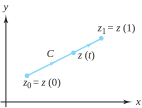
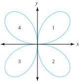
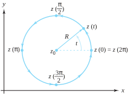
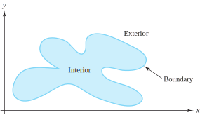
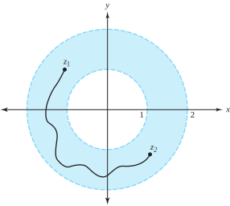
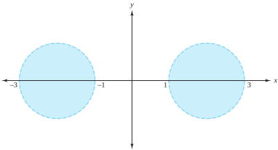
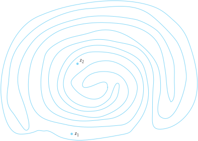

In this section we investigate some basic ideas concerning sets of points in the plane. The first concept is that of a curve. Intuitively, we think of a curve as a piece of string placed on a flat surface in some type of meandering pattern. More formally, we define a curve to be the range of a continuous complex-valued function \(z(t)\) defined on the interval \([a, b]\text{.}\) That is, a curve \(C\) is the range of a function given by \(z(t) = \big(x(t),
y(t)\big) = x(t) +iy(t)\text{,}\) for \(a \le t \le b\text{,}\) where both \(x(t)\) and \(y(t)\) are continuous real-valued functions. If both \(x(t)\) and \(y(t)\) are differentiable, we say that the curve is smooth. A curve for which \(x(t)\) and \(y(t)\) are differentiable except for a finite number of points is called piecewise smooth. We specify a curve \(C\) as
\begin{equation}
C:z(t) =x(t) +iy(t) =\big(x(t), y(t)\big) \text{ for } a \le t \le b\text{,}\tag{1.6.1}
\end{equation}
and say that \(z(t)\) is a parametrization for the curve \(C\text{.}\) Note that, with this parametrization, we are specifying a direction for the curve \(C\text{,}\) saying that \(C\) is a curve that goes from the initial point \(z(a) =(x(a),
y(a)) = x(a)+iy(a)\) to the terminal point \(z(b) = \big(x(b),
y(b)\big) = x(b)+iy(b)\text{.}\) If we had another function whose range was the same set of points as \(z(t)\) but whose initial and final points were reversed, we would indicate the curve that this function defines by \(-C\text{.}\)
Example1.6.1.
Find parameterizations for \(C\) and \(-C\text{,}\) where \(C\) is the straight line segment beginning at \(z_0=(x_0, y_0)\) and ending at \(z_1=(x_1, y_1)\text{.}\)
Solution.
Refer to Figure 1.6.2. The vector form of a line shows that the direction of \(C\) is \(z_1-z_0\text{.}\) As \(z_0\) is a point on \(C\text{,}\) its vector equation is
\begin{align}
C \amp :z(t) = z_0+(z_1-z_0) t \text{ for } 0 \le t \le 1, \text{ or }\tag{1.6.2}\\
C \amp :z(t) =[x_0+(x_1-x_0)t] +i[y_0+(y_1-y_0)t], \text{ for } 0 \le t \le 1\text{.}\notag
\end{align}

Figure1.6.2.The straight-line segment \(C\) joining \(z_0\) to \(z_1\)
Using the same technique we see that one parametrization for \(-C\) is
\begin{equation}
-C:\gamma(t) = z_1+(z_0-z_1)t \text{ for } 0 \le t \le 1\text{.}\tag{1.6.3}
\end{equation}
Comparing Equations (1.6.2) and (1.6.3) illustrates a general principle: If \(C\) is a curve parametrized by \(z(t)\) for \(0 \le t \le 1\text{,}\) then one parametrization for \(-C\) will be \(\gamma(t) = z(1-t)\text{,}\) for \(0 \le t \le 1\text{.}\)
A curve \(C\) having the property that \(z(a) =z(b)\) is said to be a closed curve. The line segment of Expression (1.6.2) is not a closed curve. The range of \(z(t)=x(t)+iy(t)\text{,}\) where \(x(t) =\sin 2t\cos t\text{,}\) and \(y(t) =\sin 2t\sin t\) for \(0 \le t \le 2\pi\) is a closed curve because \(z(0)=(0, 0)=z(2\pi)\text{.}\) The range of \(z(t)\) is the four-leaved rose shown in Figure 1.6.3. Note that, as \(t\) goes from 0 to \(\frac{\pi}{2}\text{,}\) the point is on leaf 1; from \(\frac{\pi}{2}\) to \(\pi\text{,}\) it is on leaf 2; between \(\pi\) and \(\frac{3\pi}{2}\text{,}\) it is on leaf 3; and finally, for \(t\) between \(\frac{3\pi}{2}\) and \(2\pi\text{,}\) it is on leaf 4.
Note further that, at \((0,0)\text{,}\) the curve has crossed over itself (at points other than those corresponding with \(t=0\) and \(t=2\pi\)); we want to be able to distinguish when a curve does not cross over itself in this way. The curve \(C\) is called simple if it does not cross over itself, except possibly at its initial and terminal points. In other words, the curve \(C:z(t)\text{,}\) for \(a \le t \le b\text{,}\) is simple provided that \(z(t_1) \ne z(t_2)\) whenever \(t_1 \ne t_2\text{,}\) except possibly when \(t_1=a\) and \(t_2=b\text{.}\)

Figure1.6.3.The four-leaved rose: \(x(t) =\sin2t\cos t\text{,}\)\(y(t)=\sin2t\sin t\) for \(0 \le t \le 2\pi\)
Example1.6.4.
Show that the circle \(C\) with center \(z_0=x_0+iy_0\) and radius \(r_0\) can be parametrized to form a simple closed curve.
Solution.
Note that \(C:z(t) =(x_0+r_0\cos t) +i(y_0+r_0\sin t) = z_0+r_0e^{it}\text{,}\) for \(0 \le t \le 2\pi\text{,}\) gives the required parametrization.
Figure 1.6.5 shows that, as \(t\) varies from 0 to \(2\pi\text{,}\) the circle is traversed counterclockwise. If you were traveling around the circle in this manner, its interior would be on your left. When a simple closed curve is parametrized in this fashion, we say that the curve has a positive orientation. We will have more to say about this idea shortly.

Figure1.6.5.The simple closed curve \(z(t)=z_0 + r_0e^{it}\text{,}\) for \(0 \le t \le 2\pi\)
We need to develop some vocabulary that will help describe sets of points in the plane. One fundamental idea is that of an \(\varepsilon\)-neighborhood of the point \(z_0\text{.}\) It is the open disk of radius \(\varepsilon>0\) about \(z_0\) shown in Figure 1.6.6. Formally, it is the set of all points satisfying the inequality \(\{z: |z-z_0| \lt \varepsilon\}\) and is denoted by \(D_{\varepsilon}(z_0)\text{.}\) That is,
Figure1.6.6.An \(\varepsilon\)-neighborhood of the point \(z_0\)
Example1.6.7.
The solution sets of the inequalities \(|z| \lt 1, \; |z-i| \lt 2\text{,}\) and \(|z+1+2i|\lt 3\) are neighborhoods of the points \(0, \, i\text{,}\) and \(-1-2i\text{,}\) with radii 1, 2, and 3, respectively. They can also be expressed as \(D_1(0), \, D_2(i)\text{,}\) and \(D_3(-1-2i)\text{.}\)
We also define \(\overline{D}_\varepsilon(z_0)\text{,}\) the closed disk of radius \(\varepsilon\) centered at \(z_0\text{,}\) and \(D_\varepsilon^*(z_0)\text{,}\) the punctured disk of radius \(\varepsilon\) centered at \(z_0\) as
The point \(z_0\) is said to be an interior point of the set \(S\) provided that there exists an \(\varepsilon\)-neighborhood of \(z_0\) that contains only points of \(S\text{;}\)\(z_0\) is called an exterior point of the set \(S\) if there exists an \(\varepsilon\)-neighborhood of \(z_0\) that contains no points of \(S\text{.}\) If \(z_0\) is neither an interior point nor an exterior point of \(S\text{,}\) then it is called a boundary point of \(S\) and has the property that each \(\varepsilon\)-neighborhood of \(z_0\) contains both points in \(S\) and points not in \(S\text{.}\)Figure 1.6.8 illustrates this situation.

Figure1.6.8.The interior, exterior, and boundary of a set
The boundary of \(D_R(z_0)\) is the circle depicted in Figure 1.6.5. We denote this circle \(C_R(z_0)\) and refer to it as the circle of radius R centered at \(z_0\text{.}\) Thus
We use the notation \(C_R^+(z_0)\) to indicate that the parametrization we chose for this simple closed curve resulted in a positive orientation; \(C_R^-(z_0)\) denotes the same circle, but with a negative orientation. (In both cases, counterclockwise denotes the positive direction.) Using notation that we have already introduced, we get \(C_R^-(z_0) =-C_R^+(z_0)\text{.}\)
Example1.6.9.
Let \(S=D_1(0) = \{z:|z|\lt 1 \}\text{.}\) Find the interior, exterior, and boundary of \(S\text{.}\)
Solution.
We show that every point of \(S\) is an interior point of \(S\text{.}\) Let \(z_0\) be a point of \(S\text{.}\) Then \(|z_0|\lt 1\text{,}\) and we can choose \(\varepsilon=1-|z_0|>0\text{.}\) We claim that \(D_\varepsilon(z_0) \subseteq S\text{.}\) If \(z \in D_\varepsilon(z_0)\text{,}\) then
Hence the \(\varepsilon\)-neighborhood of \(z_0\) is contained in \(S\text{,}\) which shows that \(z_0\) is an interior point of \(S\text{.}\) It follows that the interior of \(S\) is the set \(S\) itself. PARAGRAPH Similarly, it can be shown that the exterior of \(S\) is \(\{z:|z| >1 \}\text{,}\) and the boundary of \(S\) is the unit circle \(C_1(0) =\{z: |z| =1 \}\text{.}\) These claims follow from that fact that, if \(z_0=e^{i\theta_0}\) is any point on the circle, then any \(\varepsilon\)-neighborhood of \(z_0\) will contain two points: \((1-\frac{\varepsilon}{2}) e^{i\theta_0}\text{,}\) which belongs to \(S\text{;}\) and \((1+\frac{\varepsilon}{2})e^{i\theta_0}\text{,}\) which does not belong to \(S\text{.}\) We leave the details of demonstrating this claim as an exercise.
The point \(z_0\) is called an accumulation point of the set \(S\) if, for each \(\varepsilon\text{,}\) the punctured disk \(D_\varepsilon^*(z_0)\) contains at least one point of \(S\text{.}\) We ask you to show in the exercises that the set of accumulation points of \(D_1(0)\) is \(\overline{D}_1(0)\text{,}\) and that there is only one accumulation point of \(S=\{\frac{i}{n}:n=1, \, 2,\ldots \}\text{,}\) namely, the point \(0\text{.}\) We also ask you to prove that a set is closed if and only if it contains all of its accumulation points.
A set \(S\) is called an open set if every point of \(S\) is an interior point of \(S\text{.}\) Thus, Example Example 1.6.9 shows that \(D_1(0)\) is open. A set \(S\) is called a closed set if it contains all its boundary points. A set \(S\) is said to be a connected set if every pair of points \(z_1\) and \(z_2\) contained in \(S\) can be joined by a curve that lies entirely in \(S\text{.}\) Roughly speaking, a connected set consists of a “single piece.” The unit disk \(D_1(0)=\{z:|z|\lt 1\}\) is a connected open set. We ask you to verify in the exercises that, if \(z_1\) and \(z_2\) lie in \(D_1(0)\text{,}\) then the straight-line segment joining them lies entirely in \(D_1(0)\text{.}\) The annulus \(A=\{z:1\lt |z|\lt 2\}\) is a connected open set because any two points in \(A\) can be joined by a curve \(C\) that lies entirely in \(A\text{,}\) as shown in Figure 1.6.10.

Figure1.6.10.The annulus \(A=\{z:1|z|\lt 2\}\) is a connected set
The set \(B=\{z:|z+2|\lt 1 \text{ or } |z-2|\lt 1\}\) consists of two disjoint disks. We leave it as an exercise for you to show that the set is not connected, as shown in Figure 1.6.11.

Figure1.6.11.The set \(B=\{z:|z+2|\lt 1 or |z-2|\lt 1\}\) is not a connected set
We call a connected open set a domain. In the exercises we ask you to show that the open unit disk \(D_1(0)=\{z:|z|\lt 1\}\) is a domain and that the closed unit disk \(\overline{D}_1(0)=\{z:|z| \le 1\}\) is not a domain. The term domain is a noun and is a type of set. In Chapter 2 we note that it also refers to the set of points on which a function is defined. In the latter context, it does not necessarily mean a connected open set.
Example1.6.12.
Show that the right half-plane \(H=\{z: \mathrm{Re}(z) >0 \}\) is a domain.
Solution.
First we show that \(H\) is connected. Let \(z_0\) and \(z_1\) be any two points in \(H\text{.}\) We claim the obvious: the straight-line segment \(C\) given by Equation (1.6.2) lies entirely within \(H\text{.}\) To prove this claim, we let \(z(t^*)=z_0+(z_1-z_0)t^*\text{,}\) for some \(t^* \in [0, 1]\text{,}\) be an arbitrary point on \(C\text{.}\) We must show that \(\mathrm{Re}\big(z(t^*)\big)>0\text{.}\) Now,
If \(t=0\text{,}\) the last expression becomes \(\mathrm{Re}(z_0)\text{,}\) which is greater than zero because \(z_0 \in H\text{.}\) Likewise, if \(t=1\text{,}\) then the right side of Equation (1.6.8) reduces to \(\mathrm{Re}(z_1)\text{,}\) which also is positive. Finally, if \(0\lt t^*\lt 1\text{,}\) then each term in Equation (1.6.8) is positive, so in this case we also have \(\mathrm{Re}\big(z(t^*)\big)>0\text{.}\) PARAGRAPH To show that \(H\) is open, we suppose without loss of generality that \(\mathrm{Re}(z_0) \le \mathrm{Re}(z_1)\text{.}\) We claim that \(D_\varepsilon(z_0) \subseteq H\text{,}\) where \(\varepsilon=\mathrm{Re}(z_0)\text{.}\) We leave the proof of this claim as an exercise.
A domain, together with some, none, or all its boundary points, is called a region. For example, the horizontal strip \(\{z:1\lt \mathrm{Im}(z) \le 2\}\) is a region. A set formed by taking the union of a domain and its boundary is called a closed region; thus \(\{z:1 \le \mathrm{Im}(z) \le 2\}\) is a closed region. A set is said to be a bounded set if it can be completely contained in some closed disk, that is, if there exists an \(R>0\) such that for each \(z\) in \(S\) we have \(|z| \le R\text{.}\) The rectangle given by \(\{z:|x| \le 4 \text{ and } |y| \le 3\}\) is bounded because it is contained inside the disk \(\overline{D}_5(0)\text{.}\) A set that cannot be enclosed by any closed disk is called an unbounded set.
We mentioned earlier that a simple closed curve is positively oriented if its interior is on the left when the curve is traversed. How do we know, though, that any given simple closed curve will have an interior and exterior? Theorem 1.6 guarantees that this is indeed the case. It is due in part to the work of the French mathematician Camille Jordan (1838–1922).
Theorem1.6.13.The Jordan curve theorem.
The complement of any simple closed curve \mathit{C} can be partitioned into two mutually exclusive domains, \(I\) and \(E\text{,}\) in such a way that \(I\) is bounded, \(E\) is unbounded, and \(C\) is the boundary for both \(I\) and \(E\text{.}\) In addition, \(I \cup E \cup C\) is the entire complex plane. The domain \(I\) is called the interior of \(C\text{,}\) and the domain \(E\) is called the exterior of \(C\text{.}\)
The Jordan curve theorem is a classic example of a result in mathematics that seems obvious but is very hard to demonstrate, and its proof is beyond the scope of this book. Jordan’s original argument, in fact, was inadequate, and not until 1905 was a correct version finally given by the American topologist Oswald Veblen. The difficulty lies in describing the interior and exterior of a simple closed curve analytically, and in showing that they are connected sets. For example, in which domain (interior or exterior) do the two points depicted in Figure 1.6.14 lie? If they are in the same domain, how, specifically, can they be connected with a curve? If you appreciated the subtleties involved in showing that the right half-plane of Example 1.6.12 is connected, you can begin to appreciate the obstacles that Veblen had to navigate.
Although an introductory treatment of complex analysis can be given without using this theorem, we think it is important for the well-informed student at least to be aware of it.

Figure1.6.14.Are \(z_1\) and \(z_2\) in the interior or exterior of this simple closed curve?
ExercisesExercises
1.
Find a parametrization of the line that
(a)
joins the origin to the point \(1+i\text{.}\)
Solution.
\(z(t) =t+it\) for \(0 \le t \le 1\text{.}\)
(b)
joins the point 1 to the point \(1+i\text{.}\)
(c)
joins the point \(i\) to the point \(1+i\text{.}\)
Solution.
\(z(t) =t+i\) for \(0 \le t \le 1\text{.}\)
(d)
joins the point 2 to the point \(1+i\text{.}\)
2.
Sketch the curve \(z(t) =t^2+2t+i(t+1) \label {1.6.2}\)
(a)
for \(-1\le t \le0\text{.}\)
(b)
for \(1\le t \le2\text{.}\)
\hint{Use \(x=t^2+2t\text{,}\)\(y=t+1\) and eliminate the parameter \(t\text{.}\)}
3.
Find a parametrization of the curve that is a portion of the parabola \(y=x^2\) that
(a)
joins the origin to the point \(2+4i\text{.}\)
Solution.
\(z(t) =t+it^2\) for \(0 \le t \le 2\text{.}\)
(b)
joins the point \(-1+i\) to the origin.
(c)
joins the point \(1+i\) to the origin.
Solution.
\(z(t) =1-t+i(1-t)^2\) for \(0 \le t \le 1\text{.}\)
4.
This exercise completes Example Example 1.6.12: Suppose that \(\mathrm{Re}(z_0)>0\text{.}\) Show that \(\mathrm{Re}(z)>0\) for all \(z\in D_\varepsilon(z_0)\text{,}\) where \(\varepsilon=\mathrm{Re}(z_0)\text{.}\)
5.
Find a parametrization of the curve that is a portion of the circle \(|z|=1\) that joins the point \(-i\) to \(i\) if
(a)
the curve is the right semicircle.
Solution.
\(z(t) =\cos t+i\sin t\) for \(-\frac{\pi}{2} \le t \le \frac{\pi}{2}\text{.}\)
(b)
the curve is the left semicircle.
6.
Show that \(D_1(0)\) is a domain and that \(\overline{D}_1(0) =\{z:|z| \le 1\}\) is not a domain.
7.
Find a parametrization of the curve that is a portion of the circle \(C_1(0)\) that joins the point 1 to \(i\) if
(a)
the parametrization is counterclockwise along the quarter circle.
Solution.
\(z(t) =\cos t+i\sin t\) for \(0 \le t \le \frac{\pi}{2}\text{.}\)
(b)
the parametrization is clockwise.
8.
Fill in the details to complete Example Example 1.6.9. That is, show that
(a)
the set \(\{z:|z|>1\}\) is the exterior of the set \(S\text{.}\)
(b)
the set \(C_1(0)\) is the boundary of the set \(S\text{.}\)
9.
Consider the following sets. (i) \(\{z:\mathrm{Re}(z)>1\}\text{.}\)
(vi) \(\{re^{i\theta}:r>1 \text{ and } \frac{\pi}{4} \lt \theta \lt \frac{\pi}{3}\}\text{.}\)
(vii) \(\{z:|z|\lt 1 \text{ or } |z-4|\lt 1\}\text{.}\)
(a)
Sketch each set.
(b)
State, with reasons, which of the following terms apply to the above sets: open; connected; domain; region; closed region; bounded.
Solution.
Open: (i), (iv), (v), (vi), and (vii). Connected: (i)–(vi). Domains: (i), (iv), (v), and (vi). Regions: (i)–(vi). Closed regions: (iii). Bounded: (iii), (v), and (vii).
10.
Show that \(D_1(0)\) is connected. \hint{Show that if \(z_1\) and \(z_2\) lie in \(D_1(0)\text{,}\) then the straight-line segment joining them lies entirely in \(D_1(0)\text{.}\)}
11.
Let \(S=\{z_1, z_2, \ldots, z_n\}\) be a finite set of points. Show that \(S\) is a bounded set.
Solution.
Let \(R=\max\{|z_1|,|z_2|,\ldots ,|z_n|\}\text{.}\) Clearly, \(S \subseteq \overline{D_R(0)}\text{.}\) Thus, \(S\) is bounded.
12.
Prove that the boundary of \(D_\varepsilon(z_0)\) is the circle \(C_\varepsilon(z_0)\text{.}\)
13.
Let \(S\) be the open set consisting of all points \(z\) such that \(|z+2|\lt 1\) or \(|z-2|\lt 1\text{.}\) Show that \(S\) is not connected.
Solution.
Let \(C:z(t)=\big(x(t),y(t)\big), \, a \le t \le b\) be any curve joining \(-2\) and \(2\text{.}\) Then \(x(a)=-2\text{,}\) and \(x(b)=2\text{.}\) By the intermediate value Theorem, there is some \(t^{\ast }\in (a,b)\) such that \(x(t^*)=0\text{.}\) But this means \(z(t^{\ast })=\big(0,\,y(t^*)\big)\) is not in the set in question. Explain why!
14.
Prove \(0\) is the only accumulation point of \(\{\frac{i}{n}:n=1, 2, \ldots\}\text{.}\)
15.
Regarding the relation between closed sets and accumulation points,
(a)
Prove that if a set is closed, then it contains all its accumulations points.
Solution.
We prove the contrapositive. Suppose \(z_0\) is accumulation point of \(S\text{,}\) but that \(z_0\) does not belong to \(S\text{.}\) By definition of an accumulation point, every deleted neighborhood, \(D_{\varepsilon}^*(z_0)\text{,}\) contains at least one point of \(S\text{.}\) Therefore, every (non-deleted) neighborhood \(D_{\varepsilon}(z_0)\) also contains at least one point of \(S\)and at least one point not in \(S\) (namely, \(z_0\)). This condition implies that \(z_0\text{,}\) which does not belong to \(S\text{,}\) is a boundary point of \(S\text{.}\) (Show the details for this last assertion). Thus, the set \(S\) is not closed.
(b)
Prove that if a set contains all its accumulation points, then it is closed.
16.
Prove that \(\overline{D}_1(0)\) is the set of accumulation points of
(a)
The set \(D_1(0)\text{.}\)
(b)
The set \(D_1^*(0)\text{.}\)
17.
Memorize and be prepared to illustrate all the terms in bold in this section.